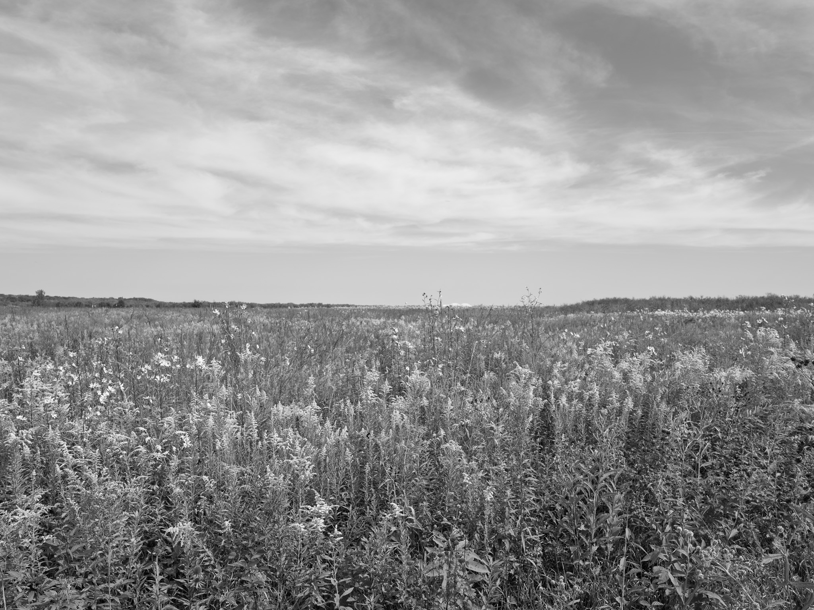
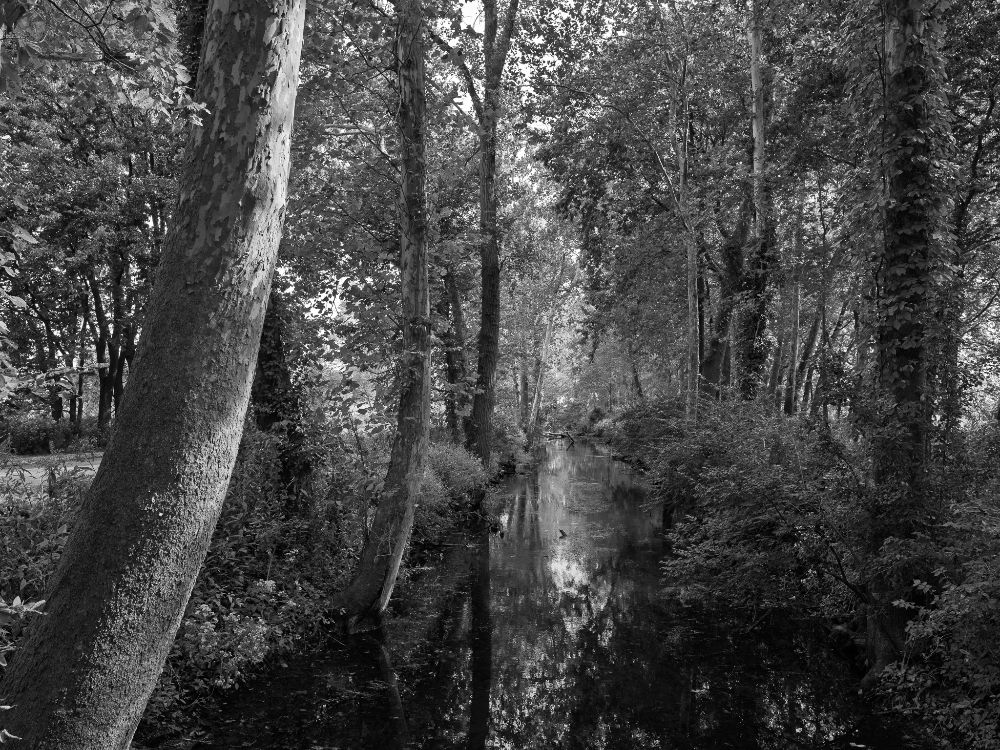
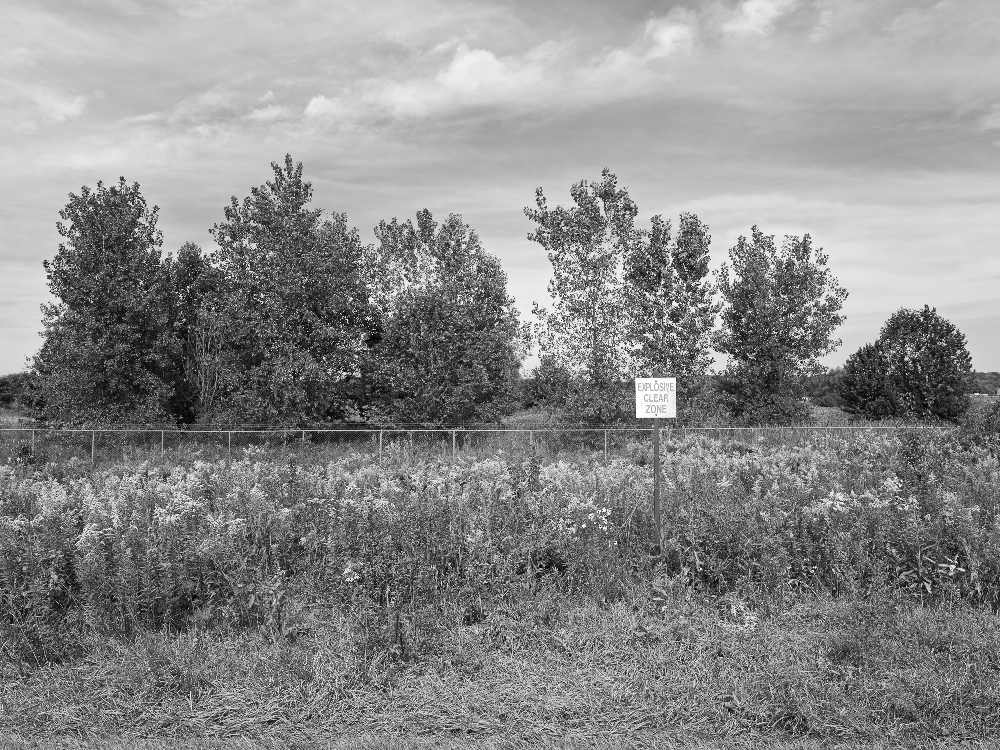
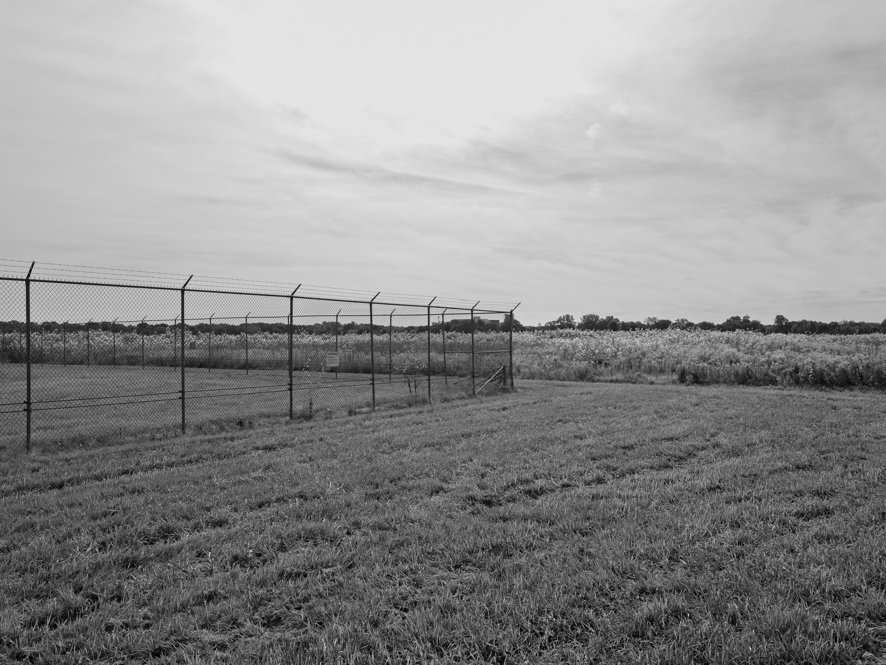

Public Lands Institute
Map
Images
Archive
About
Support
Huffman Prairie Flying Field
OH

Huffman Prairie Flying Field 1 · 2026-09-11
_DSF4613.jpg

Huffman Prairie Flying Field 2 · 2026-09-11
_DSF4619.jpg

Huffman Prairie Flying Field 3 · 2026-09-11
_DSF4626.jpg

Huffman Prairie Flying Field 4 · 2026-09-11
_DSF4628.jpg
View all 4 images →
← Spring Valley Wildlife Area
Caldwell Nature Preserve →